ENПоследна актуализация: 25 октомври 2026 г.
Тази политика обяснява какви лични данни се събират, когато използвате smart-start-consulting.com, защо се събират и какви права имате според Общия регламент на ЕС относно защитата на данните (GDPR).
Администратор на данните е БетаСве ЕООД (BetaSve EOOD), дружество, регистрирано в България, което развива SmartStart Consulting и този сайт.
Как да се свържете с нас относно данните си: използвайте формата за контакт и започнете съобщението си с „Искане за поверителност“. Ще ви отговорим на имейл адреса, който въведете във формата.
Когато изпратите съобщение, получаваме вашия имейл адрес, съобщението ви и технически данни, например часа на изпращане. Формата се обработва от Formspree.
Разговорите се запазват чрез Cal.com. Календарът за записване се зарежда от Cal.com едва когато натиснете бутон за безплатен разговор. Когато запазите час, получаваме вашето име, имейл адрес, избрания час и всичко, което напишете в бележките към записването. Самият разговор се провежда в Google Meet чрез линка в потвърждението на записването. Cal.com може да записва бисквитките, нужни за работата на записването, според собствената си политика за поверителност.
Ако приемете аналитичните бисквитки, използваме Google Analytics 4, за да разберем как посетителите използват сайта: кои страници се разглеждат, откъде идват посетителите (например от търсачка или реклама), приблизително местоположение (държава и град), тип устройство и браузър, както и кликвания върху бутони като този за безплатен разговор. Google Analytics 4 не записва и не съхранява IP адреси.
Рекламираме в LinkedIn. Ако приемете маркетинговите бисквитки, LinkedIn Insight Tag записва, че сте посетили сайта, кои страници сте разгледали и дали сте изпратили съобщение, записали сте разговор или сте кликнали върху бутон за контакт. LinkedIn може да свърже тази информация с профила ви в LinkedIn. Ние виждаме само обобщени отчети, например колко посетители са дошли от реклама, но никога кои сте вие. LinkedIn може да използва данните и за да ви показва нашите реклами в LinkedIn.
Бутоните за WhatsApp и Viber отварят съответните приложения. Ако ни пишете там, получаваме телефонния ви номер, името ви и съобщенията ви, които използваме само за да ви отговорим. Тези приложения обработват данните ви според собствените си политики за поверителност.
Сайтът се хоства в GitHub Pages. Шрифтовете и иконите се зареждат от самия сайт. Скриптът за банера за бисквитки се зарежда от jsDelivr. Когато браузърът ви го зарежда, доставчикът получава IP адреса ви и информация за браузъра, което е технически необходимо, за да ви бъде доставен. Правно основание: законният ни интерес да поддържаме сигурен и работещ сайт (чл. 6, пар. 1, буква „е“ от GDPR).
| Бисквитка | Доставчик | Предназначение | Валидност | Вид |
|---|---|---|---|---|
| cc_cookie | Този сайт | Запомня избора ви за бисквитките | 6 месеца | Задължителна |
| _ga | Разграничава уникалните посетители | 2 години | Аналитична (със съгласие) | |
| _ga_* | Пази състоянието на сесията | 2 години | Аналитична (със съгласие) | |
| li_fat_id | Свързва посещението с рекламата в LinkedIn, върху която е кликнато | 30 дни | Маркетингова (със съгласие) | |
| li_giant | Измерва резултатите от рекламите | 7 дни | Маркетингова (със съгласие) | |
| ln_or | Проверява дали тагът трябва да се изпълни | 1 ден | Маркетингова (със съгласие) | |
| bcookie, lidc, li_sugr, UserMatchHistory, AnalyticsSyncHistory | LinkedIn (linkedin.com) | Разпознават браузъра и измерват рекламите | До 1 година | Маркетингова (със съгласие) |
Не продаваме данните ви. Те се предоставят само на следните доставчици на услуги, които ги обработват от наше име:
Някои от тези доставчици са със седалище в САЩ. Предаването на данни извън ЕС се основава на Рамката за защита на данните между ЕС и САЩ, когато доставчикът е сертифициран по нея, или на стандартните договорни клаузи на Европейската комисия.
Имате право:
За да упражните тези права, изпратете ни „Искане за поверителност“ чрез формата за контакт. Ще ви отговорим в срок до един месец.
Можете също да подадете жалба до българския надзорен орган, Комисията за защита на личните данни, www.cpdp.bg.
Не вземаме автоматизирани решения за вас. Ако приемете маркетинговите бисквитки, LinkedIn може да използва посещението ви, за да избира кои реклами да ви показва, както е описано в раздел 2.
Можем да актуализираме тази политика, когато сайтът или използваните от нас услуги се променят. Датата в началото показва кога е последната актуализация.